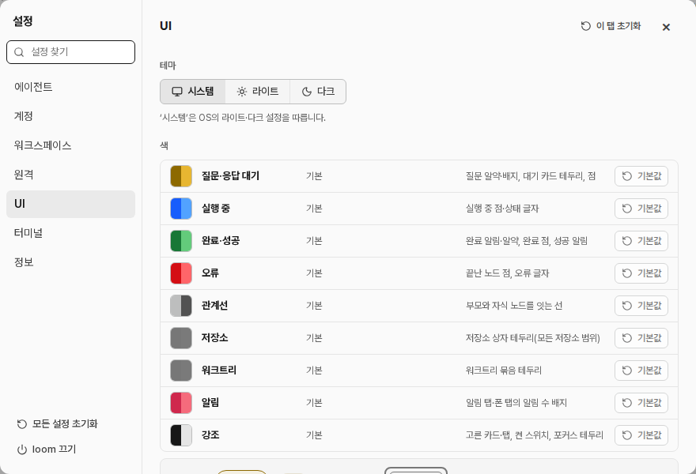

문서 ID: M38응답할 곳: 총괄 · loom 총괄연 담당: 코디 · 설정정리v2 · 2026-10-22 · 승인됨
설정 탭 다시 묶기
사람 지시: "설정은 관련있는것끼리 다시 구성을 정리해줘". 설정 칸은 그대로 두고 자리만 옮긴다. 점선이 옮긴 칸이다.
① 지금

- 「UI」 탭에 모양·그래프·질문 칸 8개가 섞여 있다.
- 「워크스페이스」「원격」 탭은 칸이 하나뿐이다.
- 「계정」의 「자동 전환」은 설정 찾기에서 나오지 않는다.
② 바뀐 뒤: 탭 7개와 칸 순서
일반
워크스페이스 폴더워크스페이스
원격 접속원격
시스템 알림UI
에이전트
설치됨 · 모든 권한 허용
설치 안 됨
내장 스킬
하위 노드 상한
에이전트 계정
자동 전환찾기 가능
Claude
Codex
화면
테마UI
색UI
언어UI
그래프
카드 보기UI
그래프 범위UI
간선 모양UI
질문 알약UI
터미널
글꼴 크기
글꼴
다크 모드 테마
라이트 모드 테마
정보
판
- 지우는 탭: 워크스페이스, 원격, UI. 새 탭: 일반, 화면, 그래프.
- 칸 이름 옆 작은 글은 지금 있는 탭이다.
- [이 탭 초기화]는 새 탭의 칸만 되돌린다. 설정 찾기는 모든 칸을 찾는다.
③ 새 「일반」 탭
일반
↺ 이 탭 초기화 ×워크스페이스 폴더
/home/me/loom/workspaces
새 워크트리를 <이 폴더>/<저장소 이름>/ 안에 만듭니다.
원격 접속 · 허용할 Tailscale 로그인
me@example.com
비우면 원격을 끕니다. 준비 순서 1~4는 이 칸 아래에 그대로 둡니다.
시스템 알림
loom 창이 보이지 않을 때 질문을 시스템 알림으로 알림승인한 것
| 정할 것 | 결정 |
|---|---|
| 탭 묶음 | ② 그대로 |
| 설정을 열 때 첫 탭 | 일반 |
| 「시스템 알림」 자리 | 일반 |
| 「계정」 탭 이름 | 에이전트 계정 (사람 지시 "계정 > 에이전트 계정") |
| [loom 끄기] | 누르면 확인 창이 무엇이 멈추고 무엇이 사는지 알린다 (사람 지시 "loom 끄기는 해당 버튼이 실행되면 무슨일이 일어나는지 안내하는 확인 팝업 띄워") |